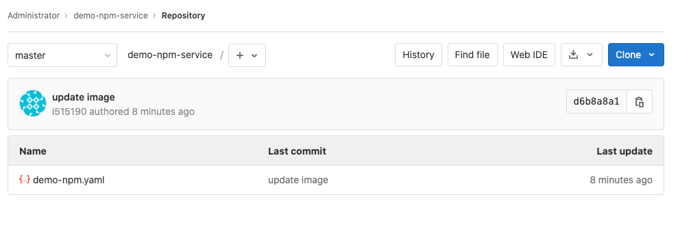
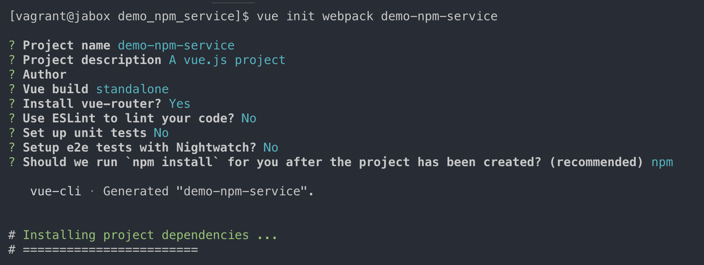
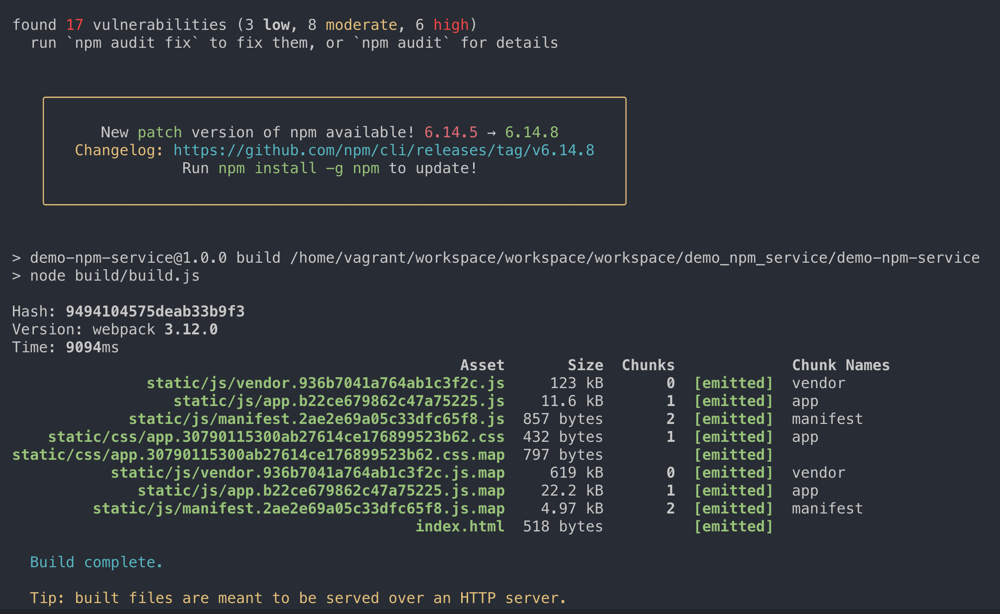

第五节 前端后端项目发布流水线（Java+Nodejs)
1、Java 项目流水线实践

- 使用
maven编译打包 - 使用
Sonar扫描 - 编写
Dockerflie构建镜像 - 自动生成
K8s部署文件，替换镜像 -
使用
Kubectl发布部署
流水线教程(第三节 Jenkins + K8S + Gitlab 构建 RLEASE 打包发布更新流水线到K8S集群)
2、NodeJs 项目流水线实践

- 初始化前端项目
- 使用
npm编译打包 - 使用
Sonar前端扫描 - 编写
Dockerfile构建镜像 - 编写K8s部署文件，替换镜像
- 使用
Kubectl发布部署
2-1 初始化一个前端项目
1、安装 npm 和 vue-cli
- https://chao-xi.github.io/jxjenkinsbook/chap11/2Docker_pipeline/#1-4
install node (wget 下载 然后声明环境变量
// 安装 vue-cli
$ sudo chown -R 1000:1000 "/home/vagrant/.npm"
$ npm install -g @vue/cli-init
2、 gitlab 创建一个新项目：demo-npm-service
demo-npm.yaml
kind: Deployment
apiVersion: apps/v1
metadata:
labels:
k8s-app: npmdemo
name: npmdemo
namespace: demo-uat
spec:
replicas: 1
revisionHistoryLimit: 10
selector:
matchLabels:
k8s-app: npmdemo
template:
metadata:
labels:
k8s-app: npmdemo
namespace: demo-uat
name: npmdemo
spec:
containers:
- name: npmdemo
image: nginx:1.17.7
imagePullPolicy: IfNotPresent
ports:
- containerPort: 80
name: web
protocol: TCP
serviceAccountName: npmdemo
---
apiVersion: v1
kind: ServiceAccount
metadata:
labels:
k8s-app: npmdemo
name: npmdemo
namespace: demo-uat
---
kind: Service
apiVersion: v1
metadata:
labels:
k8s-app: npmdemo
name: npmdemo
namespace: demo-uat
spec:
ports:
- name: web
port: 80
targetPort: 80
selector:
k8s-app: npmdemo

3、快速创建一个 Pipeline 项目 demo_npm_service
#!groovy
@Library('jenkinslib@master') _
def k8s = new org.devops.kubernetes()
def gitlab = new org.devops.gitlab()
def build = new org.devops.buildtools()
pipeline {
agent { node { label "vagrant-agent" }}
parameters {
string(name: 'srcUrl', defaultValue: 'http://192.168.33.1:30088/root/demo-npm-service.git', description: '')
choice(name: 'branchName', choices: 'master\nstage\ndev', description: 'Please chose your branch')
choice(name: 'buildType', choices: 'npm', description: 'build tool')
string(name: 'buildShell', defaultValue: 'install && npm run build', description: 'build tool')
}
stages{
stage('Checkout') {
steps {
script {
checkout([$class: 'GitSCM', branches: [[name: "${branchName}"]], doGenerateSubmoduleConfigurations: false, extensions: [], submoduleCfg: [], userRemoteConfigs: [[credentialsId: 'gitlab-admin-user', url: "${srcUrl}"]]])
}
}
}
}
}
4、运行这个Pipeline, 然后进入这个项目中初始化项目
$ cd demo_npm_service
$ vue init webpack demo-npm-service

$ cd demo-npm-service
$ npm install && npm run build

$ tree dist/
dist/
├── index.html
└── static
├── css
│ ├── app.30790115300ab27614ce176899523b62.css
│ └── app.30790115300ab27614ce176899523b62.css.map
└── js
├── app.b22ce679862c47a75225.js
├── app.b22ce679862c47a75225.js.map
├── manifest.2ae2e69a05c33dfc65f8.js
├── manifest.2ae2e69a05c33dfc65f8.js.map
├── vendor.936b7041a764ab1c3f2c.js
└── vendor.936b7041a764ab1c3f2c.js.map
3 directories, 9 files
6、传统发布流程
cd dist/ && tar zcf demo-npm-service.tar.gz
cp demo-npm-service.tar.gz /usr/sahre/nginx/html && tar zxf
7、Docker发布流程
Dockerfile
FROM nginx:1.17.7
COPY demo-npm-service/dist/ /usr/share/nginx/html
2-2 建立打包发布流水线
demo_npm_service
#!groovy
@Library('jenkinslib@master') _
def k8s = new org.devops.kubernetes()
def gitlab = new org.devops.gitlab()
def build = new org.devops.buildtools()
pipeline {
agent { node { label "vagrant-agent" }}
parameters {
string(name: 'srcUrl', defaultValue: 'http://192.168.33.1:30088/root/demo-npm-service.git', description: '')
choice(name: 'branchName', choices: 'master\nstage\ndev', description: 'Please chose your branch')
// choice(name: 'buildType', choices: 'npm', description: 'build tool')
// string(name: 'buildShell', defaultValue: 'install && npm run build', description: 'build tool')
}
stages{
stage('Checkout') {
steps {
script {
checkout([$class: 'GitSCM', branches: [[name: "${branchName}"]], doGenerateSubmoduleConfigurations: false, extensions: [], submoduleCfg: [], userRemoteConfigs: [[credentialsId: 'gitlab-admin-user', url: "${srcUrl}"]]])
}
}
}
stage("Build&Test"){
steps{
script{
println("执行打包")
sh "cd demo-npm-service && npm install --unsafe-perm=true && npm run build && ls -l dist/"
}
}
}
//构建镜像
stage("BuildImages"){
steps{
script{
println("构建上传镜像")
// env.serviceName = "${JOB_NAME}".split("_")[0]
env.serviceName = "${JOB_NAME}"
withCredentials([usernamePassword(credentialsId: 'docker-registry-admin', passwordVariable: 'password', usernameVariable: 'username')])
{
env.dockerImage = "nyjxi/${serviceName}:${branchName}"
sh """
docker login -u ${username} -p ${password}
docker build -t nyjxi/${serviceName}:${branchName} .
sleep 1
docker push nyjxi/${serviceName}:${branchName}
sleep 1
docker rmi nyjxi/${serviceName}:${branchName}
"""
}
}
}
}
stage('Checkout-For-Master') {
agent { node { label "hostmachine" }}
steps {
script {
checkout([$class: 'GitSCM', branches: [[name: "${branchName}"]], doGenerateSubmoduleConfigurations: false, extensions: [], submoduleCfg: [], userRemoteConfigs: [[credentialsId: 'gitlab-admin-user', url: "${srcUrl}"]]])
}
}
}
//发布
stage("Deploy"){
agent { node { label "hostmachine" }}
steps{
script{
println("发布应用")
//获取旧镜像
yamlData = readYaml file: "demo-npm.yaml"
println(yamlData[0])
println(yamlData[0]["spec"]["template"]["spec"]["containers"][0]["image"])
oldImage = yamlData[0]["spec"]["template"]["spec"]["containers"][0]["image"]
//替换镜像
sourceData = readFile file: 'demo-npm.yaml'
println(sourceData)
println(sourceData.getClass()) //returns the exact type of an object.
sourceData = sourceData.replace(oldImage,dockerImage)
println(sourceData)
writeFile file: 'demo-npm.yaml', text: """${sourceData}"""
sh """
#cat demo-npm.yaml
kubectl apply -f demo-npm.yaml
"""
}
}
}
}
}
1. Npm 创建与打包
stage("Build&Test"){
steps{
script{
println("执行打包")
sh "cd demo-npm-service && npm install --unsafe-perm=true && npm run build && ls -l dist/"
}
}
}
2. Npm 构建镜像
stage("BuildImages"){
steps{
script{
println("构建上传镜像")
// env.serviceName = "${JOB_NAME}".split("_")[0]
env.serviceName = "${JOB_NAME}"
withCredentials([usernamePassword(credentialsId: 'docker-registry-admin', passwordVariable: 'password', usernameVariable: 'username')])
{
env.dockerImage = "nyjxi/${serviceName}:${branchName}"
sh """
docker login -u ${username} -p ${password}
docker build -t nyjxi/${serviceName}:${branchName} .
sleep 1
docker push nyjxi/${serviceName}:${branchName}
sleep 1
docker rmi nyjxi/${serviceName}:${branchName}
"""
}
}
}
}
3. 切换构建机器并下载代码（kubectl执行环境所在机器）
stage('Checkout-For-Master') {
agent { node { label "hostmachine" }}
steps {
script {
checkout([$class: 'GitSCM', branches: [[name: "${branchName}"]], doGenerateSubmoduleConfigurations: false, extensions: [], submoduleCfg: [], userRemoteConfigs: [[credentialsId: 'gitlab-admin-user', url: "${srcUrl}"]]])
}
}
}
3. 通过kubectl更新deployment镜像
stage("Deploy"){
agent { node { label "hostmachine" }}
steps{
script{
println("发布应用")
//获取旧镜像
yamlData = readYaml file: "demo-npm.yaml"
println(yamlData[0])
println(yamlData[0]["spec"]["template"]["spec"]["containers"][0]["image"])
oldImage = yamlData[0]["spec"]["template"]["spec"]["containers"][0]["image"]
//替换镜像
sourceData = readFile file: 'demo-npm.yaml'
println(sourceData)
println(sourceData.getClass()) //returns the exact type of an object.
sourceData = sourceData.replace(oldImage,dockerImage)
println(sourceData)
writeFile file: 'demo-npm.yaml', text: """${sourceData}"""
sh """
#cat demo-npm.yaml
kubectl apply -f demo-npm.yaml
"""
}
}
}
}
}


Console output
SuccessConsole Output
Started by user admin
Running in Durability level: MAX_SURVIVABILITY
Loading library jenkinslib@master
Examining Chao-Xi/JenkinslibTest
Attempting to resolve master as a branch
Resolved master as branch master at revision 4ff6110f7a787bd8eee5e99e0c93cffd2cd265de
using credential github
> git rev-parse --is-inside-work-tree # timeout=10
Fetching changes from the remote Git repository
> git config remote.origin.url https://github.com/Chao-Xi/JenkinslibTest.git # timeout=10
Fetching without tags
Fetching upstream changes from https://github.com/Chao-Xi/JenkinslibTest.git
> git --version # timeout=10
> git --version # 'git version 2.11.0'
using GIT_ASKPASS to set credentials
> git fetch --no-tags --progress -- https://github.com/Chao-Xi/JenkinslibTest.git +refs/heads/master:refs/remotes/origin/master # timeout=10
Checking out Revision 4ff6110f7a787bd8eee5e99e0c93cffd2cd265de (master)
> git config core.sparsecheckout # timeout=10
> git checkout -f 4ff6110f7a787bd8eee5e99e0c93cffd2cd265de # timeout=10
Commit message: "add kubernetest"
> git rev-list --no-walk 4ff6110f7a787bd8eee5e99e0c93cffd2cd265de # timeout=10
[Pipeline] Start of Pipeline
[Pipeline] node
Running on vagrant-agent in /home/vagrant/workspace/workspace/demo_npm_service
[Pipeline] {
[Pipeline] stage
[Pipeline] { (Checkout)
[Pipeline] script
[Pipeline] {
[Pipeline] checkout
using credential gitlab-admin-user
Fetching changes from the remote Git repository
Checking out Revision f92f92ad70c37f3f09c95bfbb85befde3335fc4e (origin/master)
Commit message: "update dockerfile"
> git rev-parse --is-inside-work-tree # timeout=10
> git config remote.origin.url http://192.168.33.1:30088/root/demo-npm-service.git # timeout=10
Fetching upstream changes from http://192.168.33.1:30088/root/demo-npm-service.git
> git --version # timeout=10
> git --version # 'git version 1.8.3.1'
using GIT_ASKPASS to set credentials
> git fetch --tags --progress http://192.168.33.1:30088/root/demo-npm-service.git +refs/heads/*:refs/remotes/origin/* # timeout=10
> git rev-parse origin/master^{commit} # timeout=10
> git config core.sparsecheckout # timeout=10
> git checkout -f f92f92ad70c37f3f09c95bfbb85befde3335fc4e # timeout=10
> git rev-list --no-walk f92f92ad70c37f3f09c95bfbb85befde3335fc4e # timeout=10
[Pipeline] }
[Pipeline] // script
[Pipeline] }
[Pipeline] // stage
[Pipeline] stage
[Pipeline] { (Build&Test)
[Pipeline] script
[Pipeline] {
[Pipeline] echo
执行打包
[Pipeline] sh
+ cd demo-npm-service
+ npm install --unsafe-perm=true
npm WARN ajv-keywords@3.5.2 requires a peer of ajv@^6.9.1 but none is installed. You must install peer dependencies yourself.
npm WARN optional SKIPPING OPTIONAL DEPENDENCY: fsevents@2.1.3 (node_modules/fsevents):
npm WARN notsup SKIPPING OPTIONAL DEPENDENCY: Unsupported platform for fsevents@2.1.3: wanted {"os":"darwin","arch":"any"} (current: {"os":"linux","arch":"x64"})
npm WARN optional SKIPPING OPTIONAL DEPENDENCY: fsevents@1.2.13 (node_modules/watchpack-chokidar2/node_modules/fsevents):
npm WARN notsup SKIPPING OPTIONAL DEPENDENCY: Unsupported platform for fsevents@1.2.13: wanted {"os":"darwin","arch":"any"} (current: {"os":"linux","arch":"x64"})
npm WARN optional SKIPPING OPTIONAL DEPENDENCY: fsevents@1.2.13 (node_modules/webpack-dev-server/node_modules/fsevents):
npm WARN notsup SKIPPING OPTIONAL DEPENDENCY: Unsupported platform for fsevents@1.2.13: wanted {"os":"darwin","arch":"any"} (current: {"os":"linux","arch":"x64"})
audited 1274 packages in 8.831s
29 packages are looking for funding
run `npm fund` for details
found 17 vulnerabilities (3 low, 8 moderate, 6 high)
run `npm audit fix` to fix them, or `npm audit` for details
+ npm run build
> demo-npm-service@1.0.0 build /home/vagrant/workspace/workspace/demo_npm_service/demo-npm-service
> node build/build.js
Hash: [1mcc34753b040c844221bc[39m[22m
Version: webpack [1m3.12.0[39m[22m
Time: [1m10232[39m[22mms
[1mAsset[39m[22m [1mSize[39m[22m [1mChunks[39m[22m [1m[39m[22m [1m[39m[22m[1mChunk Names[39m[22m
[1m[32mstatic/js/vendor.936b7041a764ab1c3f2c.js[39m[22m 123 kB [1m0[39m[22m [1m[32m[emitted][39m[22m vendor
[1m[32mstatic/js/app.b22ce679862c47a75225.js[39m[22m 11.6 kB [1m1[39m[22m [1m[32m[emitted][39m[22m app
[1m[32mstatic/js/manifest.2ae2e69a05c33dfc65f8.js[39m[22m 857 bytes [1m2[39m[22m [1m[32m[emitted][39m[22m manifest
[1m[32mstatic/css/app.30790115300ab27614ce176899523b62.css[39m[22m 432 bytes [1m1[39m[22m [1m[32m[emitted][39m[22m app
[1m[32mstatic/css/app.30790115300ab27614ce176899523b62.css.map[39m[22m 797 bytes [1m[39m[22m [1m[32m[emitted][39m[22m
[1m[32mstatic/js/vendor.936b7041a764ab1c3f2c.js.map[39m[22m 619 kB [1m0[39m[22m [1m[32m[emitted][39m[22m vendor
[1m[32mstatic/js/app.b22ce679862c47a75225.js.map[39m[22m 22.2 kB [1m1[39m[22m [1m[32m[emitted][39m[22m app
[1m[32mstatic/js/manifest.2ae2e69a05c33dfc65f8.js.map[39m[22m 4.97 kB [1m2[39m[22m [1m[32m[emitted][39m[22m manifest
[1m[32mindex.html[39m[22m 518 bytes [1m[39m[22m [1m[32m[emitted][39m[22m
Build complete.
Tip: built files are meant to be served over an HTTP server.
Opening index.html over file:// won't work.
+ ls -l dist/
total 4
-rw-rw-r--. 1 vagrant vagrant 518 Aug 29 02:11 index.html
drwxrwxr-x. 4 vagrant vagrant 27 Aug 29 02:11 static
[Pipeline] }
[Pipeline] // script
[Pipeline] }
[Pipeline] // stage
[Pipeline] stage
[Pipeline] { (BuildImages)
[Pipeline] script
[Pipeline] {
[Pipeline] echo
构建上传镜像
[Pipeline] withCredentials
Masking supported pattern matches of $username or $password
[Pipeline] {
[Pipeline] sh
+ docker login -u **** -p ****
WARNING! Using --password via the CLI is insecure. Use --password-stdin.
WARNING! Your password will be stored unencrypted in /home/vagrant/.docker/config.json.
Configure a credential helper to remove this warning. See
https://docs.docker.com/engine/reference/commandline/login/#credentials-store
Login Succeeded
+ docker build -t ****/demo_npm_service:master .
Sending build context to Docker daemon 162.7MB
Step 1/2 : FROM nginx:1.17.7
---> c7460dfcab50
Step 2/2 : COPY demo-npm-service/dist/ /usr/share/nginx/html
---> 7bfb4e14b75f
Successfully built 7bfb4e14b75f
Successfully tagged ****/demo_npm_service:master
+ sleep 1
+ docker push ****/demo_npm_service:master
The push refers to repository [docker.io/****/demo_npm_service]
33aa390ffe98: Preparing
c26e88311e71: Preparing
17fde96446df: Preparing
556c5fb0d91b: Preparing
17fde96446df: Layer already exists
c26e88311e71: Layer already exists
556c5fb0d91b: Layer already exists
33aa390ffe98: Pushed
master: digest: sha256:b07347f3144a8d72dda47b8b6a8c6688e8be505890d83ec6d6fead467b073982 size: 1158
+ sleep 1
+ docker rmi ****/demo_npm_service:master
Untagged: ****/demo_npm_service:master
Untagged: ****/demo_npm_service@sha256:b07347f3144a8d72dda47b8b6a8c6688e8be505890d83ec6d6fead467b073982
Deleted: sha256:7bfb4e14b75f7844a4d8d5c859e58e18b951e47ea5528cee8cf6092921c7b68c
Deleted: sha256:f8efe6a8a2c3832f337ed137ffbb50db64a2d7e4bbd5844b221acefe5c5e021d
[Pipeline] }
[Pipeline] // withCredentials
...
发布应用
[Pipeline] readYaml
[Pipeline] echo
{kind=Deployment, apiVersion=apps/v1, metadata={labels={k8s-app=npmdemo}, name=npmdemo, namespace=demo-uat}, spec={replicas=1, revisionHistoryLimit=10, selector={matchLabels={k8s-app=npmdemo}}, template={metadata={labels={k8s-app=npmdemo}, namespace=demo-uat, name=npmdemo}, spec={containers=[{name=npmdemo, image=nginx:1.17.7, imagePullPolicy=IfNotPresent, ports=[{containerPort=80, name=web, protocol=TCP}]}], serviceAccountName=npmdemo}}}}
[Pipeline] echo
nginx:1.17.7
[Pipeline] readFile
[Pipeline] echo
kind: Deployment
apiVersion: apps/v1
...
[Pipeline] writeFile
[Pipeline] sh
+ kubectl apply -f demo-npm.yaml
deployment.apps/npmdemo configured
serviceaccount/npmdemo unchanged
service/npmdemo unchanged
$ kubectl get pods -o custom-columns='NAME:metadata.name,IMAGES:spec.containers[*].image' -n demo-uat
NAME IMAGES
npmdemo-5fd79bfd49-gt88v nyjxi/demo_npm_service:master
$ kubectl get svc -n demo-uat
NAME TYPE CLUSTER-IP EXTERNAL-IP PORT(S) AGE
npmdemo ClusterIP 10.105.172.158 <none> 80/TCP 6h27m
$ kubectl port-forward svc/npmdemo -n demo-uat 3333:80
Forwarding from 127.0.0.1:3333 -> 80
Forwarding from [::1]:3333 -> 80